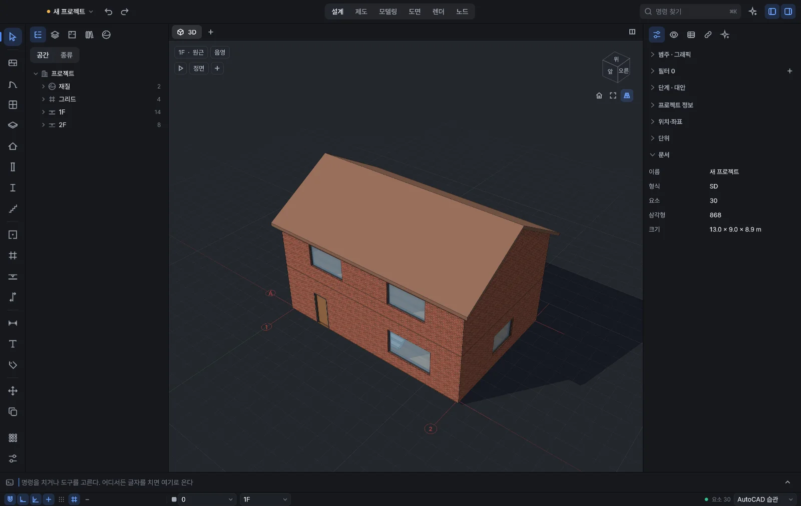
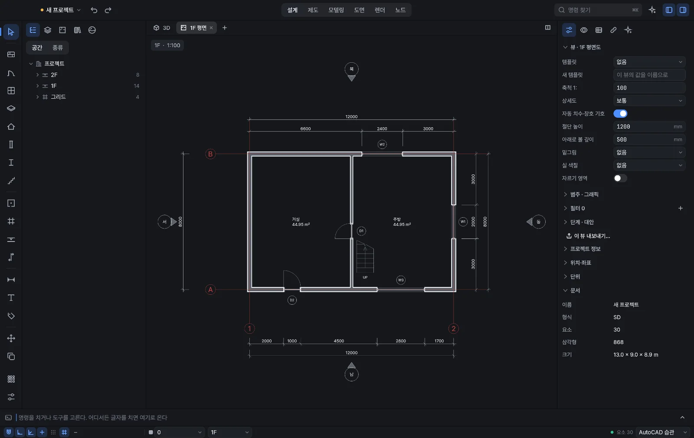
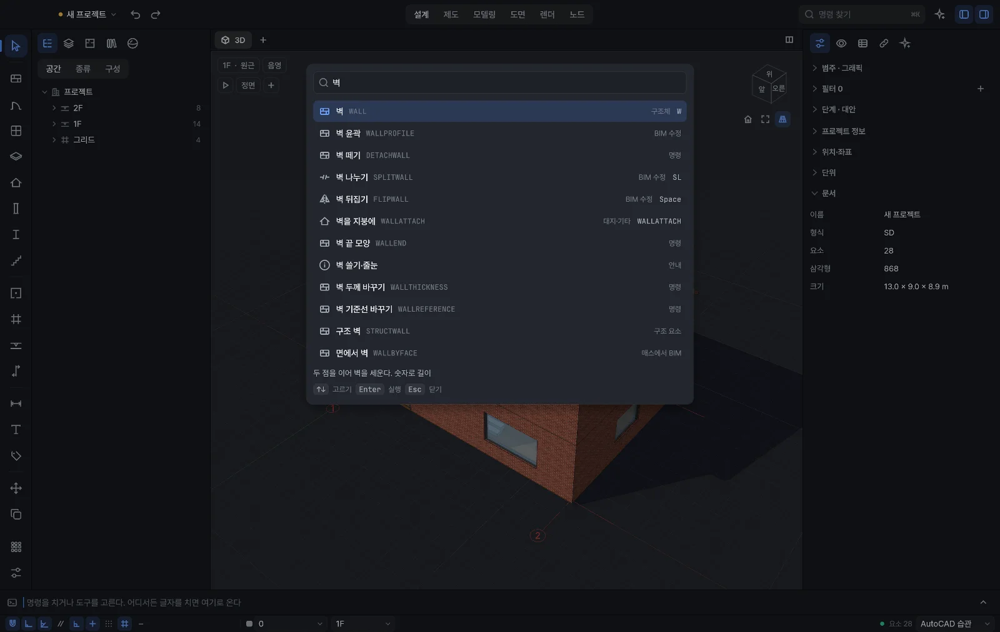

画、拉、修、建。
在同一个模型上。
一说 CAD，大家想到的是画图纸。HyperSeven CAD 不止于此：画线、拉起体块、调整自由曲面、用节点组织形体、用墙和门把房子盖起来——从头到尾都在同一个模型上进行。
还没有正式发布。这一页先让你看看我们正在做的东西，内容可能会变。
不换软件，只换手法
以前在 AutoCAD、SketchUp、Rhino、Grasshopper、Revit 之间来回导文件的活儿，现在一个界面搞定。用惯的命令名和快捷键也照样能用。
用命令行和别名、捕捉、标注、填充、图块来画图纸。
类似工具 · AutoCAD
推拉面把体块立起来，重复的部分做成组件。
类似工具 · SketchUp
用控制点调整 NURBS 曲线和曲面，也能处理 SubD 和网格。
类似工具 · Rhino
把节点连起来写出形体的规则，改改数值就能比较方案。
类似工具 · Grasshopper
用墙、门、窗、楼板、屋顶、楼梯来建，平面、剖面、立面和明细表都从模型里出。
类似工具 · Revit · Archicad
图纸从模型里来
拿一栋示例小房子，依次看三维、平面和命令搜索。



用惯的命令名和快捷键
可以用 AutoCAD、SketchUp、Rhino、Revit、Archicad 里的命令名和快捷键来查找、执行命令，还能导入 AutoCAD 的 acad.pgp 和 Revit 的快捷键文件。
AI 帮忙，人来拍板
在应用里直接用一句话吩咐 AI，或者通过 MCP 接入智能体。还能用 Python 和插件补上缺的工具，需要的功能可以和 AI 一起做出来。AI 做的东西只是建议，确认由人来。
从手头的文件接着做
目标是打开现有的设计文件继续工作，并导出为开放标准格式。各格式具体支持到什么程度，发布时会列表公布。
先在 Mac 上打磨
先在 Apple Silicon Mac 上打磨好，Windows 和 Linux 随后跟上。发布日期还没定。
AutoCAD 和 Revit 是 Autodesk 的商标，SketchUp 是 Trimble 的商标，Rhino 和 Grasshopper 是 Robert McNeel & Associates 的商标，Archicad 是 Graphisoft 的商标。HyperSeven CAD 与这些公司没有关联。